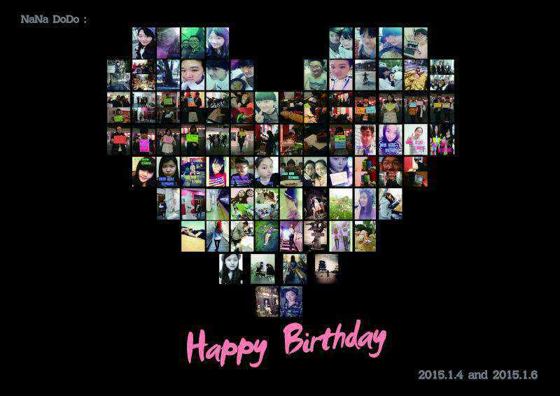
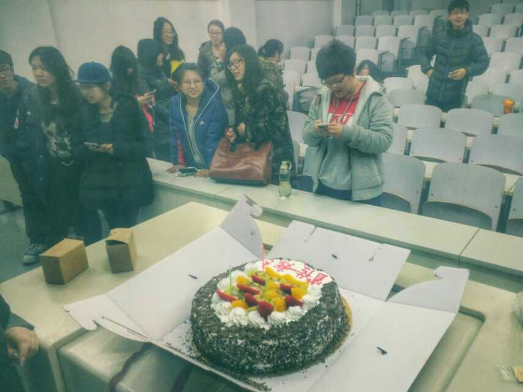
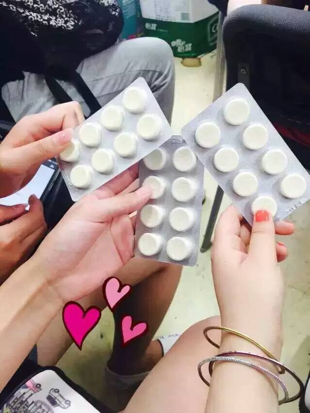
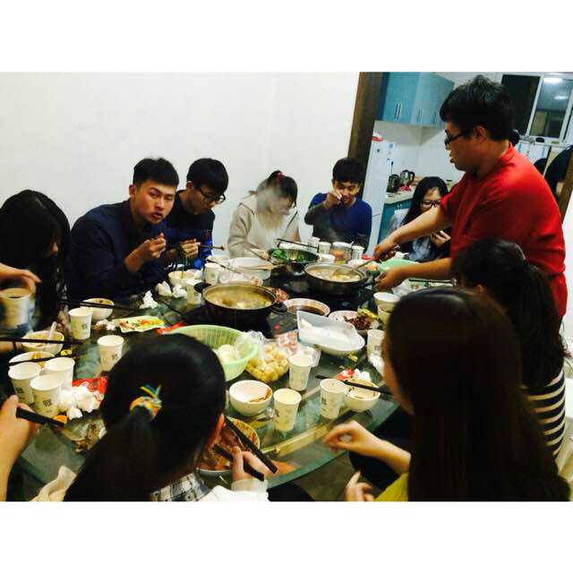
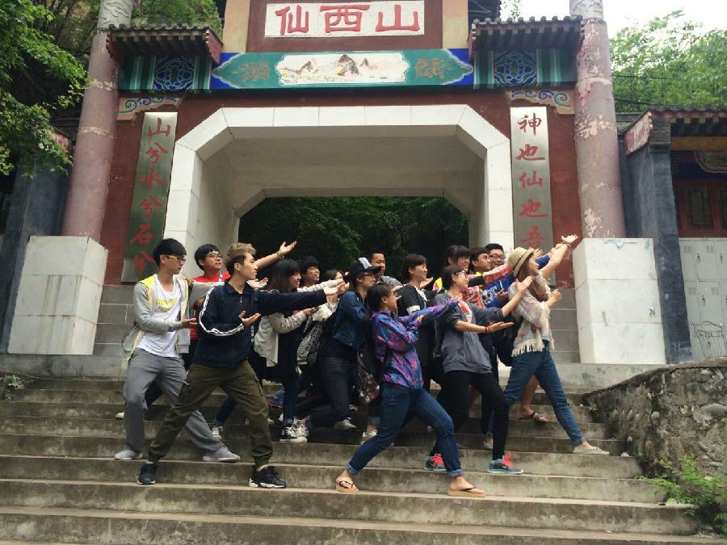

今天完成了压在Todo里面很久的一件事，也算是在学生会开发的最后一个功能吧！如释重负！——别了，校会。
今天花了五个多小时完成了好妹妹抢票功能；失物招领的细节优化，设计文案和微信推送；拿到了所有微信认证的资料，填写了信息；推送完去了实验室和学长交流了四旋翼；然后两个多小时的电话会议；当一切结束，突然感觉如释重负。在这个深夜，想写点什么！
一切都是围绕着学生会，当学期将要结束，一种分离的伤感很自然的从心中生出，内心过于内心细腻，所以我会倍加珍惜每一段感情。
这个时候，回忆学生会的一年，加上大一算是两年了，留下的是满满的幸福。
还记得她们生日的时候那种感动。

还记得给你们小惊喜的时候你们的开心。


还记得一起聚会。

还记得一起出游。

美好的事情有很多，现在想反思一下一年来的自己，自己对一些事情的看法。
网络组
其实现在想想自己对网络组的定义有很多错误，当时想着要做的只是把他变成一个技术小分队，不过一年下来效果并不好，原因有很多，不想细说了。现在来看，网络组应该利用自己对网络了解的优势，去充分利用网络，而利用的表现就是形式和文案，文案也就是推送内容。技术上的东西用各种方式再借助第三方平台都能实现，只不过和期望的效果可能会有些出入；但是内容上的东西是核心，作为一个学生组织应该用内容去充实一个平台，引导学生关注我们希望展示的内容，而不是主要用功能去满足大家。
效率
记得自己最有效率的一次是开发相约晨光签到功能，三天的时间，上课设计逻辑，下课晚上熬到凌晨2点去实现功能。当时之所以做到这样驱使自己的是兴趣，是挑战性，是想要给大家证明网络组存在的意义。慢慢的狂热总会有冷却的时候，经历过多烦心事后，有一段时间只是想逃离这个组织，不过再到后来中规中矩能稳住一步一步的去做开发。
学生会网站有现成的框架，也许三天时间就能搞定；评价系统如果再早点动手，也许现在也做好了。这两件事是遗憾。不过今天总算是完成了失物招领，兑现了自己之前的承诺；还有微信认证。真的瞬间感觉轻松好多，发完宣传推送后，感觉自己可以无怨无悔的离开了。
挑战，兴趣带来很高的效率，可是每天的工作中大部分会是平淡的，让自己在平淡的工作中变得也有效率也是一种收获！
舍得
有收获就有付出，有舍就有得。在学生会工作就不能在实验室学习；晚上写代码第二题早起就没有足够的精力去背单词；把心放到学生会上自己的事就要往后推。就应该是这样，不过在这个过程中我也慢慢的学会了取舍，学会了选择，这就是收获。
每次深夜敲完代码睡觉的时候，躺在床上久久不能入睡，写代码让我的大脑处于兴奋状态，思路活跃，大脑中思索着一个又一个逻辑功能，一个又一个设想，思考着一个又一个细节，真他妈变态，累一天了还不能安稳的休息，好痛苦。不过每当脑海中划过一个一个产品细节之后，总能有意外的收获和想法...拿出手机，赶紧记下来...
担当
一年里作为一个部长，我感觉自己是做到了担当这点，她们状态不好时我会去安慰，去理解去倾听,我感觉我问心无愧了，算是很体谅她们了吧。我说为了她们我放弃了很多，付出了很多，这样说被她们看到不知道会不会骂我...对干事们，从分配任务，到帮助大家完成任务，还有指导带领大家学习，我也尽力了。也许自己做的还不够好，但是还是那句话，我能对自己说，我已经无愧了。
夜已深，明晚继续...
好累的一天，下午写了十份实验报告...修改好妹妹专场推送还有抢票功能，盯完抢票去开放实验，回来支付微信认证订单，整理抢票数据。我操，其实也没做多少事，可是却感觉一天过的没有喘息的机会。
成长
一直在成长，可是当你经历的事比较多时，你就成长的更快。当一段时间每天生活没有安宁的时候，有时候会沉入低谷，于是有意识的想着去改变这种状态，转换自己的模式。当累的时候，想要放手的时候，就想想身边的人，想象一群孩子们，我必须坚持。很多时候把自己当成一个孩子，一个幼稚的永远长不大的孩子去逃避不想接受的现实。不过时间却过的这么快，蓦然回首竟发现自己已经二十有余，却还想个高中生一样，或者换句话说和高中时候的自己一样，我却看不到我哪里有成长，没有一个成年人的模样。其实已经成长太多，只不过没有达到自己所希望的那样吧。
创业
最近两年国家也在大力提倡大学生创业，大一，自己傻乎乎的也想着创业。不过在经历过之后才发现正确的路。自己想要的不是创业，而是追求挑战性，追求新鲜事物，有想法想靠自己的努力去实现，这完全和创业有着天壤地别，当然也是一件很好的事。不过话说回来，大学中很多人无脑想创业，一个乳臭未干的孩子，不知道什么是核心竞争力，没有资源，没有人脉，没有实力，没有规划，创个屁业。这样说也许不好。另一个角度，就应该不考虑结果的去做，去实现自己的目标！说不定，真的创业成功了呢？不过我想，如果跟着自己强烈的兴趣爱好走，你将会有强大的动力，将会可以坚持去做一件事，无论结果如何，你肯定有很重要的收获！时刻清楚自己在做什么，放手去尝试吧，画个翅膀，去天空翱翔！
加入了一个创业团队，很多牛人，来自大麦，腾讯，阿里。技术，设计，产品。每次开会说着我听不懂的英文缩写= =，讨论模式，核心竞争了，产品。在这个过程中不只是自己的技术得以提升，更多的是学习他们的思想，考虑事情的角度，收获很多。
记得看过一本书，说的是先就业，再择业，再创业。感觉说的很对。
孤独
一直感觉自己是个孤独患者，年纪越来越大，知心朋友却越来越少，年少时，有铁的要命的几个朋友，在一起玩，闹，哭，无所畏惧，无所忌讳，更没有心机，每个人都那么简单，喜欢就是喜欢，厌恶就吵架，吵完还是好朋友。现在却感觉自己身后空无一人，我用心去对待身边的每个人，去寻找曾经的那种朋友，可是真成了奢望。慢慢的接受了这个现实，变得无所谓，大家开心就好。慢慢变得喜欢自己一个人静静，一个人走在校园里，一个人去吃饭，淡然的对待身边的一切。有时候，孤独未必是件坏事。
加了自己喜欢的妹子的微信，却无从开口，不知道怎么去聊天，畏惧了努力的过程，畏惧经历一个从陌生变到熟悉的过程。习惯了孤独。
思考
写博客给我留下思考的时间，这样自己的经历不会被白白的浪费，这样我能反思自己，能去发现自己的成长，能去感受自己的孤独。
记得高中的时候每天活在高考的压力之下，一次去书店看书，看到一些文学作品，渴望去阅读，可是没有时间。现在有时间却没有珍惜，没有用来读好书，每天在图书馆借的无非编程和硬件相关的。文学能陶冶情操，提高一个人的素养和品质。读书的时候最静，最容易思考。以后不再这么忙碌，也许有很多空闲的时间，希望自己能多看书~
完美
理想中的自己是个好学生，尊师敬长。总想着有个好成绩，在各方面追求优秀，追求完美。自己骨子里也不服输。可是，你每天的经历都没放在学习上你还想取得好成绩？痴人做梦！自己之前拿过三个奖学金，想继续冲刺拿国奖，想在竞赛中拿到一等奖，不想挂科，想通过四级，你凭什么做到这些！？没有在这付出就不会在这获得回报。不要把自己看的这么优秀，这样只会让自己更累！没有付出就别他妈奢求回报。慢慢的看开，一个人的精力有限，所以一些事情自己懂得不要再去强求，去追求完美。
学生会
从自己的角度看学生会。例会上有很多话想说却从没说出口，感觉就算说了也不会有什么改变，还怕被其他人感觉自己是个事儿B。事实也是，改变是一个过程。
学生会，最原本应该是和学校官方组织比较对立的一个组织吧，代表和维护学生利益。现在百度百科的定义为：学生会，是现在学校中的组织结构之一，是由学校组织，在团委的指导下学生管理自己的群众性组织，是学校联系学生的桥梁和纽带。是学校最重要的学生组织之一。在现在社会与校园没有无理欺压和那么多不公，学生会的定义的进化也是理所当然，作为学校团委领导下的正规组织当然最好，能更方便更多的为学生服务。
今年在学生会的一年里，感觉我们也在慢慢进步。这是一个有爱的组织，一个充满温暖的家庭。
学生会和社团不同，社团大部分以共同兴趣聚集在一起，团内每个人都志同道合，有不约而合的共同追求。学生会却不一样，学生会是一个工作的地方，每天的活动大部分情况下可能是去干活，而不是一起练舞，玩滑板。提到我在学生会工作，也许有人会说你很牛逼，学生会的都是有些的人；也许有人会说你就是个傻叉，每天要做的就是干活。
很多人来学生会就是想学东西，却发现来到之后就TM干活了，而且和工作一样却没有工资，如何去带动积极性？必然会出现有人散漫和难于管理。作为部长，我们竭尽全力去营造一个家的感觉，在情感上带动大家，让大家在学生会有所收获；每年的学生会很大程度上会延续上一届的做法，当然也会有创新，但是思维也难免被限制。这样当然可行，不过也有弊端：效率低，积极性低，收获少。这里收获指的是专业点的技能（收获不少？参加学生组织都会获得经验和人脉），在我们做很多事的时候大部分是效仿上一届的做法，无论科学与否，没有老师指导。
从自己浅显愚昧无知的角度加上两年来的经历谈下建议~
完善的奖惩机制
...
专业的老师指导
...
健全的监督制度
...
年度的终极计划
...
还是不细说了。 = =。
一年里在自己的学习爱好和学生会工作中我选择了学生会，当马上要离开时脑海中闪过的是一个又一个美好瞬间，更多的还有不舍。
两年的时光在这度过，一种复杂的情感在里面，我却不知道怎么表达。虽然厌倦过，逃离过，不过我爱这里，我爱身边陪伴着我度过这两年的每个伙伴。
当一切画了一个句号，生活还在继续。也许将会不适应大三的日子，清闲也是一种罪过。
生活是条没有尽头的路，在这条路上，不忘初心，方得始终！